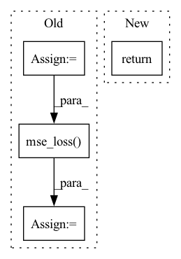

Pattern ID :6813

Before Change
**kwargs) -> dict:
elevation_map = data[ChannelEnum.ELEVATION_MAP]
reconstructed_elevation_map = output[ChannelEnum.RECONSTRUCTED_ELEVATION_MAP]
if LossEnum.RECONSTRUCTION.value in config.get("normalization", []):
elevation_map, ground_truth_norm_consts = InputNormalization.normalize(ChannelEnum.ELEVATION_MAP,
input=elevation_map,
batch=True)
reconstructed_elevation_map, _ = InputNormalization.normalize(ChannelEnum.RECONSTRUCTED_ELEVATION_MAP,
input=reconstructed_elevation_map,
batch=True,
norm_consts=ground_truth_norm_consts)
recons_loss = F.mse_loss(reconstructed_elevation_map, elevation_map)
return {LossEnum.LOSS: recons_loss, LossEnum.RECONSTRUCTION: recons_loss}
After Change
return output
def loss_function(self, **kwargs) -> dict:
return self.eval_loss_function(**kwargs)
In pattern: SUPERPATTERN
Frequency: 3
Non-data size: 4
Instances
Fragment ID: 23194821
Project Name: mstoelzle/solving-occlusion
Commit Name: 3fe81db9b5faf08a332a37cea2bc4f3c11702a05
Time: 2020-09-10
Author: maximilian@stoelzle.ch
File Name: src/learning/models/baseline/open_cv_baseline.py
M Class Name: OpenCVBaseline
N Class Name: OpenCVBaseline
M Method Name: loss_function(1)
N Method Name: loss_function(4)
M Parent Class: BaseBaselineModel
N Parent Class: BaseBaselineModel
M File Name: src/learning/models/baseline/open_cv_baseline.py
N File Name: src/learning/models/baseline/open_cv_baseline.py
M Start Line: 76
M End Line: 96
N Start Line: 76
N End Line: 77
'>
Before Change
curr_state_q2_value = self.q2_network(state_batch, action_batch)
new_curr_state_action, new_curr_state_log_pi, _ = self.policy_network.sample(state_batch)
next_state_target_v_value = self.target_v_network(next_state_batch)
curr_state_v_value = self.v_network(state_batch)
new_curr_state_q1_value = self.q1_network(state_batch, new_curr_state_action)
new_curr_state_q2_value = self.q2_network(state_batch, new_curr_state_action)
min_curr_state_q_value = torch.min(curr_state_q1_value, curr_state_q2_value)
new_min_curr_state_q_value = torch.min(new_curr_state_q1_value, new_curr_state_q2_value)
//compute v loss
target_v_value = (new_min_curr_state_q_value - new_curr_state_log_pi).detach()
v_loss = F.mse_loss(curr_state_v_value, target_v_value)
v_loss_value = v_loss.detach().cpu().numpy()
self.v_optimizer.zero_grad()
v_loss.backward()
self.v_optimizer.step()
After Change
alpha_loss = torch.tensor(0.).to(util.device)
alpha_value = self.alpha.detach().cpu().numpy()
self.tot_update_count += 1
return q1_loss_value, q2_loss_value, policy_loss_value, alpha_loss_value, alpha_value
def try_update_target_network(self):
if self.tot_update_count % self.update_target_network_interval == 0:
'>
Fragment ID: 23194820
Project Name: x35f/unstable_baselines
Commit Name: 0fc82ae6328814fe2dad0c8e0ae1b172d3e5f981
Time: 2021-03-12
Author: ym8411012@126.com
File Name: sac/models.py
M Class Name: SACAgent
N Class Name: SACAgent
M Method Name: update(2)
N Method Name: update(2)
M Parent Class: BaseAgent,torch.nn.Module
N Parent Class: BaseAgent,torch.nn.Module
M File Name: sac/models.py
N File Name: sac/models.py
M Start Line: 75
M End Line: 129
N Start Line: 83
N End Line: 129
'>
Before Change
recons = args[0]
input = args[1]
e = args[2]
Z_e = args[3]
recons_loss =F.mse_loss(recons, input)
// Compute the VQ Losses
commitment_loss = F.mse_loss(e.detach(), Z_e)
embedding_loss = F.mse_loss(e, Z_e.detach())
loss = recons_loss + embedding_loss + self.beta * commitment_loss
return {"loss": loss,
"Reconstruction_Loss":recons_loss,
After Change
recons_loss = F.mse_loss(recons, input)
loss = recons_loss + vq_loss
return {"loss": loss,
"Reconstruction_Loss": recons_loss,
"VQ_Loss":vq_loss}
'>
Fragment ID: 23194804
Project Name: antixk/pytorch-vae
Commit Name: 330681d5b01126be50ee4d64433252591e50452e
Time: 2020-02-14
Author: anandkrish894@gmail.com
File Name: models/vq_vae.py
M Class Name: VQVAE
N Class Name: VQVAE
M Method Name: loss_function(1)
N Method Name: loss_function(1)
M Parent Class: BaseVAE
N Parent Class: BaseVAE
M File Name: models/vq_vae.py
N File Name: models/vq_vae.py
M Start Line: 180
M End Line: 193
N Start Line: 256
N End Line: 263